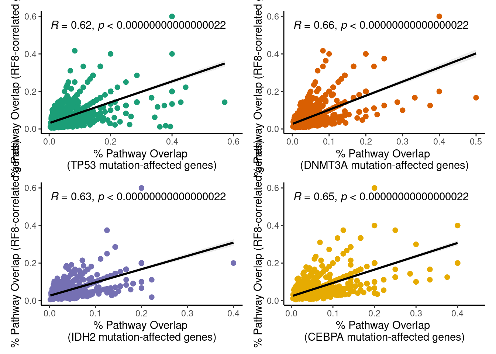
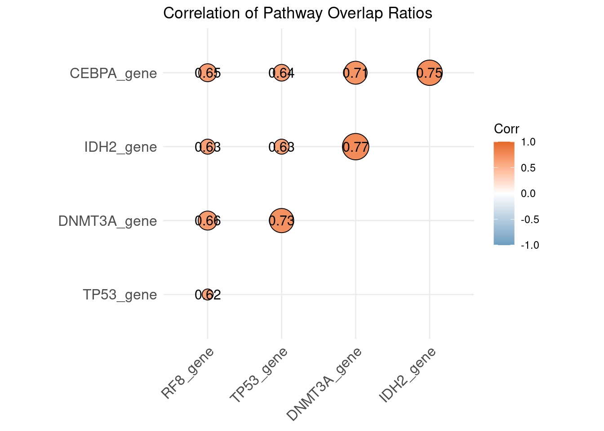

6.12 Pathway overlap analysis of genes
library(clusterProfiler)
library(org.Hs.eg.db)
library(dplyr)
library(ggpubr)
library(patchwork)
set.seed(123456)
# Define your gene lists
genes <- list(
RF8_gene = rf8_genes$ID,
TP53_gene = degs_tp53$Symbol,
DNMT3A_gene = degs_dnmt3a$Symbol,
IDH2_gene = degs_idh2$Symbol,
CEBPA_gene = degs_cebpa$Symbol
)
# Map gene symbols to ENTREZ IDs
genes <- lapply(genes, function(gene_set) {
mapIds(
org.Hs.eg.db,
keys = gene_set,
column = "ENTREZID",
keytype = "SYMBOL",
multiVals = "first"
) %>% na.omit() %>% unique()
})
# Obtain all gene-pathway associations from the database
all_pathway_genes <- AnnotationDbi::select(
org.Hs.eg.db,
keys = keys(org.Hs.eg.db, "GO"),
columns = c("ENTREZID", "GO", "ONTOLOGY"),
keytype = "GO"
) %>% filter(!is.na(GO))
# Calculate total gene counts per pathway and filter for at least 5 genes
total_genes_per_pathway <- all_pathway_genes %>%
group_by(GO) %>%
summarize(Total_Genes = n_distinct(ENTREZID)) %>%
filter(Total_Genes >= 5)
# Function to calculate overlap ratio for each gene list
calculate_overlap_ratio <- function(gene_list, pathway_genes, total_counts) {
pathway_overlap <- pathway_genes %>%
filter(ENTREZID %in% gene_list) %>%
group_by(GO, ONTOLOGY) %>%
summarize(Overlap_Count = n_distinct(ENTREZID), .groups = "drop") %>%
left_join(total_counts, by = "GO") %>%
mutate(Overlap_Ratio = Overlap_Count / Total_Genes) %>%
arrange(desc(Overlap_Ratio))
# Convert to data frame to avoid issues with tibble
pathway_overlap <- as.data.frame(pathway_overlap)
return(pathway_overlap)
}
# Calculate overlap ratios for each gene list
overlap_results <- lapply(names(genes), function(list_name) {
overlap_data <- calculate_overlap_ratio(genes[[list_name]], all_pathway_genes, total_genes_per_pathway)
# Safely select and rename columns
overlap_data <- overlap_data[, c("GO", "Overlap_Ratio")]
colnames(overlap_data)[2] <- list_name # Dynamically assign the new column name
return(overlap_data)
})
# Combine results from all gene lists into a single data frame
combined_overlap_results <- Reduce(function(x, y) merge(x, y, by = "GO", all = TRUE), overlap_results)
# Save the results as a CSV file
# write.csv(combined_overlap_results, "../03.out/figure5/pathway_overlap_analysis_result.csv", row.names = FALSE)
# Scatter plot function
plot_scatter <- function(data, x_col, y_col, color, x_label, y_label) {
ggscatter(
data = data,
x = x_col,
y = y_col,
add = "reg.line", # Add regression line
conf.int = TRUE, # Add confidence interval
add.params = list(color = "black", fill = "lightgray"), # Regression line params
color = color, # Scatter point color
size = 2 # Point size
) +
stat_cor(method = "pearson") +
labs(x = x_label, y = y_label) + # Axis labels
theme_classic() + # Use a classic theme
theme(
strip.text = element_text(size = 12, face = "bold"), # Customize facet labels
plot.title = element_text(hjust = 0.5, face = "bold"),# Center-align title
# plot.margin = margin(5, 5, 5, 5), # Reduce plot margins
panel.spacing = unit(0.5, "lines") # Reduce spacing between facets
)
}
# Scatter plots between different gene overlap ratios
p1 <- plot_scatter(combined_overlap_results, "TP53_gene", "RF8_gene", "#1B9E77",
"% Pathway Overlap \n(TP53 mutation-affected genes)",
"% Pathway Overlap (RF8-correlated genes)")
p2 <- plot_scatter(combined_overlap_results, "DNMT3A_gene", "RF8_gene", "#D95F02",
"% Pathway Overlap \n(DNMT3A mutation-affected genes)",
"% Pathway Overlap (RF8-correlated genes)")
p3 <- plot_scatter(combined_overlap_results, "IDH2_gene", "RF8_gene", "#7570B3",
"% Pathway Overlap \n(IDH2 mutation-affected genes)",
"% Pathway Overlap (RF8-correlated genes)")
p4 <- plot_scatter(combined_overlap_results, "CEBPA_gene", "RF8_gene", "#E6AB02",
"% Pathway Overlap \n(CEBPA mutation-affected genes)",
"% Pathway Overlap (RF8-correlated genes)")
# Combine plots using patchwork
plots <- (p1 | p2) / (p3 | p4)
print(plots)
library(ggcorrplot)
# Prepare the correlation matrix from the combined_overlap_results
cor_matrix <- cor(combined_overlap_results[,-1], use = "pairwise.complete.obs")
# Plot the correlation heatmap
p <- ggcorrplot(
cor_matrix,
method = "circle", # Use circle style for visualization
type = "upper", # Show only the upper triangle
lab = TRUE, # Add correlation coefficient labels
lab_size = 4, # Label size
colors = c("#6D9EC1", "white", "#E46726"), # Color gradient (blue-white-red)
title = "Correlation of Pathway Overlap Ratios",
outline.color = "black" # Outline color for circles
)
print(p)